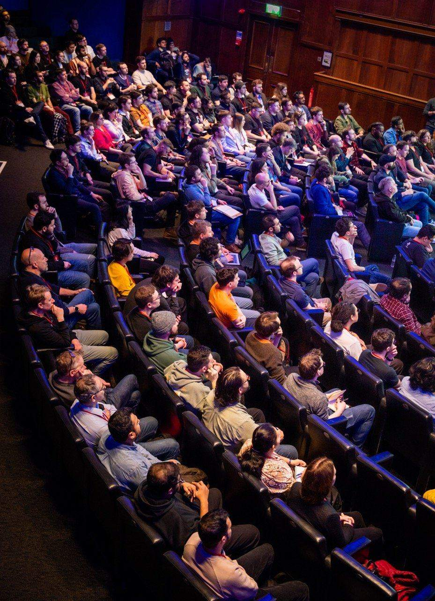

Conferences · AI
CityAI London 2027
- Dates
- –
- Venue
- Kensington Town Hall, London
- Location
- London, United Kingdom
- Format
- In-person
- Category
- AI
- Industry
- AI
- Organiser
- CityJS
- Official website
- https://london.cityjsconf.org/
About
Official page: 21-23 April 2027; workshops 21-22 April (venues TBC), full conference day 23 April at Kensington Town Hall.
Topics: AI engineering, JavaScript, LLM apps.
No organiser attendance figure found on the official pages checked. Ranked by estimate (estimated size band under 5,000; this band is a research estimate, not an organiser figure).
Sources
- Official — https://london.cityjsconf.org/
Hotels
- Hyatt Regency London Olympia — 5★ · 7 Olympia Way, London W14 0EY, United Kingdom · 1.2 km from the venue · Price on request
- Royal Garden Hotel — 5★ · 2-24 Kensington High Street, London, United Kingdom · 0.5 km from the venue · Price on request
- The Kensington Hotel — 5★ · 109-113 Queen's Gate, London, United Kingdom · 1.6 km from the venue · Price on request
- Novotel London West — 4★ · 1 Shortlands, Hammersmith, London, United Kingdom · 2.1 km from the venue · Price on request
- Hilton London Olympia — 4★ · 380 Kensington High Street, London W14 8NL, United Kingdom · 1.0 km from the venue · Price on request